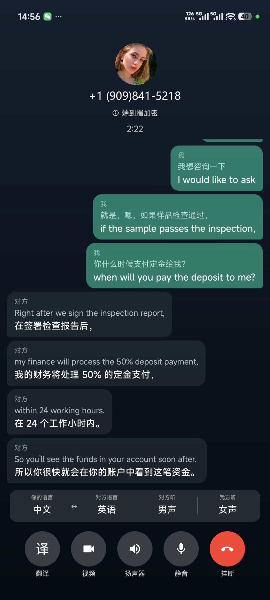

双向实时翻译
一次开启，你和对方都能边说边译，适合询价、谈交期、售后沟通等来回对话场景。
- 你说中文，对方听到外语
- 对方说外语，你听到中文
一边聊一边译，你说的话和对方说的话，都能实时变成彼此能听懂的语言。
一次开启，你和对方都能边说边译，适合询价、谈交期、售后沟通等来回对话场景。
除译音外，界面同步显示原文与译文，方便核对报价、数字和关键条款。
开通通话翻译会员后，在 WATransChat 手机 App 中即可与客户进行 WhatsApp 语音/视频通话实时翻译，无需额外安装独立软件。
除 WhatsApp 外，Zoom、Microsoft Teams、Google Meet、Discord、Telegram、微信、QQ 等语音通话仍可使用 Windows 独立版，按指引完成简单配置即可。
与 WATransChat 共用账号体系，开通通话翻译会员后手机端与电脑端均可使用，支持月付 / 年付，到期续费。
Windows 安装包一键安装，附带图文说明，客服可协助首次配置。
覆盖常见外贸语种，可在软件内选择你与对方使用的语言组合，支持中文、英语、葡萄牙语、西班牙语、日语、印尼语、德语、法语互译。
手机端已集成在 WATransChat 中，开通会员即可在通话时使用；电脑端保留独立软件，适用于更多通话应用。


通话翻译已集成到 WATransChat，开通会员后直接在手机上与客户语音/视频通话翻译，无需安装额外软件。
手机端适合在 WhatsApp 上直接与客户沟通的场景。如需在 Zoom、Teams、微信等其它软件中通话翻译，请使用下方 电脑端独立软件。
除 WhatsApp 手机通话外，Zoom、Teams、微信、QQ 等软件仍需使用 Windows 独立版。按顺序完成驱动安装、软件登录与接口配置即可。


驱动安装后建议重启电脑。电脑端适用于 Zoom、Teams、微信、QQ 等更多通话软件；若仅需在手机上与客户 WhatsApp 通话翻译，推荐使用上方 WATransChat 手机端。安装或接口填写遇到问题，可 联系微信客服获取协助。
与 WATransChat 共用账号，开通后手机端与电脑端均可使用，语音翻译为独立订阅。
在手机上通过 WATransChat 与客户 WhatsApp 语音/视频通话实时翻译；电脑端亦可用于 Telegram 等更多渠道。
适用于 Zoom、Microsoft Teams、Google Meet、Discord 等远程会议与协作通话中的即时翻译。
统一账号与续费管理，降低对双语人员的依赖。
文字聊天与手机语音/视频通话翻译均在 WATransChat 中完成；电脑端独立软件覆盖更多通话应用。
不需要。通话翻译已集成到 WATransChat 手机 App 中，开通通话翻译会员后，在手机上即可与客户进行 WhatsApp 语音/视频通话实时翻译。 详见手机端使用说明。
使用 Windows 独立版在 Zoom、Microsoft Teams、Google Meet、Discord、Telegram、微信、QQ 等电脑语音通话场景下，需要先安装页面提供的音频驱动并重启电脑。 详细步骤见电脑端安装与配置，也可咨询客服。
请联系微信客服获取最新安装包与驱动下载链接。
软件内有操作引导；也可添加客服微信，获取图文教程或预约协助配置。
请在已登录的电脑上先退出账号，或联系客服处理后再登录。
请确认已重启电脑、会员在有效期内，并检查软件内音频设备是否选择正确。仍无法解决请联系客服。